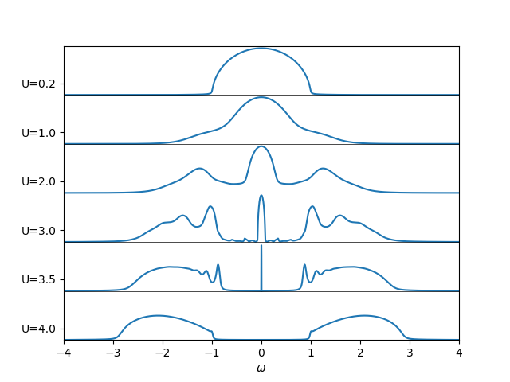

The Metal Mott Insulator transition¶
Using a real frequency IPT solver follow the spectral function along the metal to insulator transition.
from __future__ import division, absolute_import, print_function
import numpy as np
import matplotlib.pylab as plt
import dmft.common as gf
import dmft.ipt_real as ipt
w = np.linspace(-4, 4, 2**12)
gloc = gf.semi_circle_hiltrans(w + 1e-3j)
urange = [0.2, 1., 2., 3., 3.5, 4.]
plt.close('all')
for i, U in enumerate(urange):
gloc, sigma_loc = ipt.ss_dmft_loop(gloc, w, U, 400, 1e-5)
plt.gca().set_prop_cycle(None)
shift = -2.1 * i
plt.plot(w, shift + -gloc.imag)
plt.axhline(shift, color='k', lw=0.5)
plt.xlabel(r'$\omega$')
plt.xlim([-4, 4])
plt.ylim([shift, 2.1])
plt.yticks(0.5 - 2.1 * np.arange(len(urange)), ['U=' + str(u) for u in urange])
Total running time of the script: ( 0 minutes 0.977 seconds)